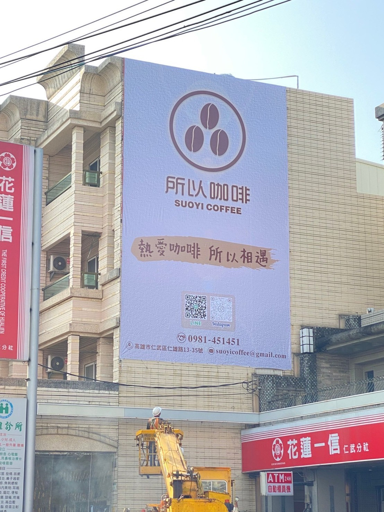
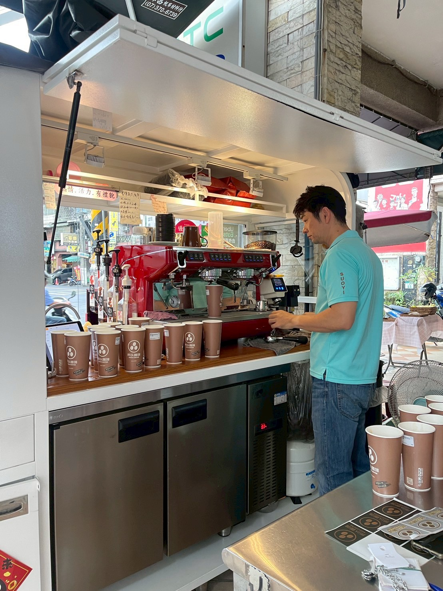
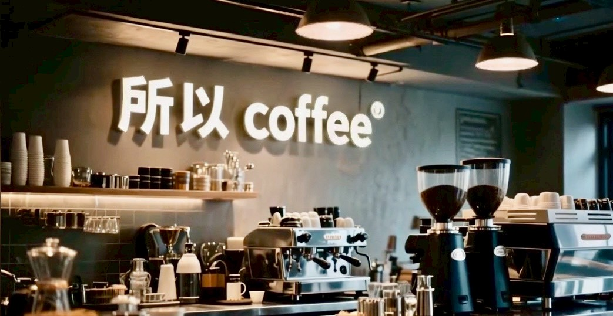
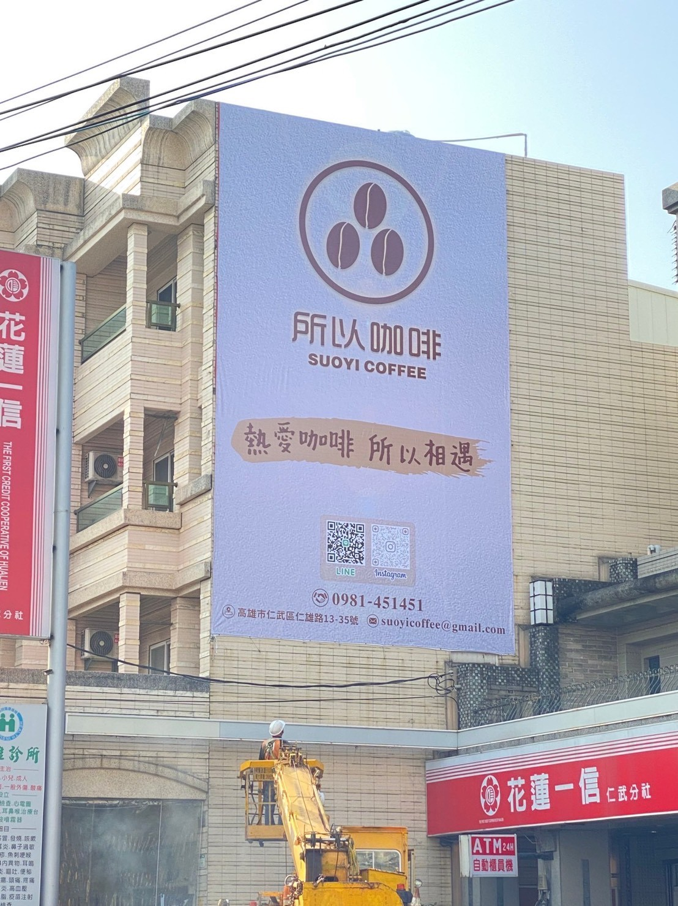
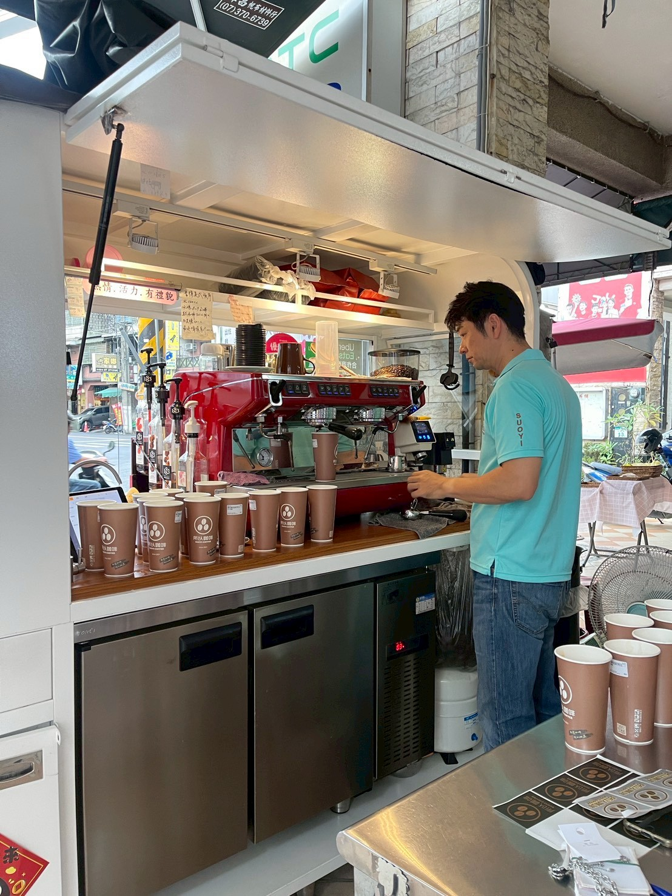
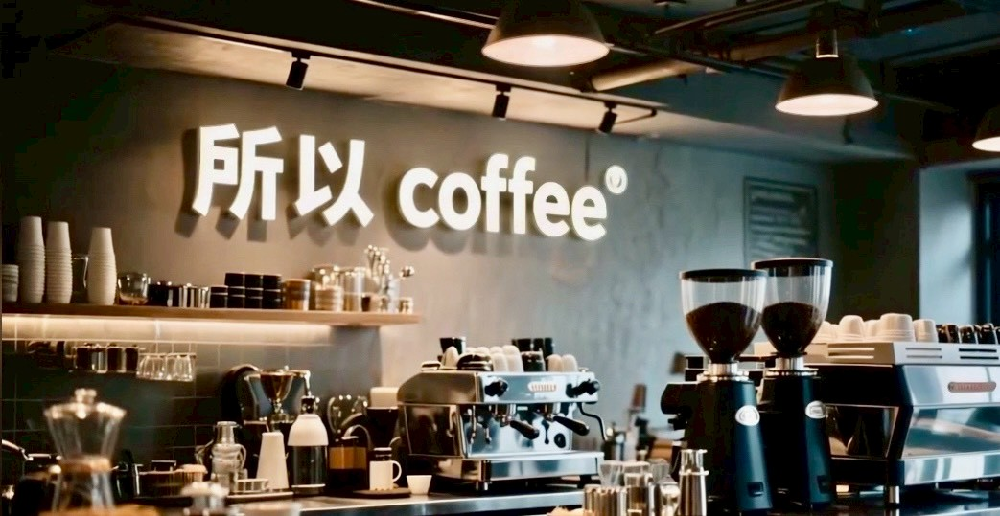

從不鏽鋼餐車，
到高雄與台南的街角。
「所以咖啡」自 2021 年創立，以不鏽鋼餐車為基地，結合專業設備與高質感設計，打造便利又講究的外帶咖啡體驗。
以得來速為靈感，把咖啡帶到街角，讓趕路、下班或放空時，都能遇見一杯香醇回甘的咖啡。
雙孔義式機、恆壓溫系統、五道 RO 濾水，專業規格毫不妥協。
快速便利卻保有質感，平價簡單仍維持專業。熱愛咖啡，所以相遇；平價奢華，所以咖啡。
品牌版圖 · 南台灣門市分佈
共 5 門市 · 持續拓點中目前門市集中於高雄市鳥松、新興、左營與台南安平區，以外帶咖啡吧為主體， 結合 UberEats、Foodpanda 外送平台，讓「平價奢華」的咖啡走進更多生活圈。
- 高雄市：鳥松 / 新興 / 左營，共 4 門市
- 台南市：安平區康平商圈 1 門市
- 標準化設備 + 外帶吧動線 + 外送平台，適合街角、小坪數店型加盟展店
 





高雄市門市 · Kaohsiung City
品牌發源地，從鳥松起家，向新興、左營穩健擴張。
鳥松大智店
品牌創始店
高雄市鳥松區大智路40號
0976-451-451
新興新田店
近新堀江商圈
高雄市新興區新田路87號
0900-474-688
左營富國店
北高雄熱點
高雄市左營區富國路48號
0916-921-158
新興復橫店
市區外帶動線佳
高雄市新興區復橫一路116號
0989-319-123
台南市門市 · Tainan City
進軍台南安平，將南部外帶咖啡版圖向西海岸延伸。
台南康平店
安平區指標店品牌版圖 · 南部起點，向外拓展
從高雄鳥松第一台不鏽鋼餐車出發，現在已布局高雄四區與台南安平，並同步與 UberEats、Foodpanda 合作，讓 「平價奢華」的咖啡體驗延伸到更多生活圈。
- 標準化設備規劃：雙孔義式機、恆壓溫系統、五道 RO 濾水。
- 外帶為主，外送加值：店面坪數彈性，適合街角、小基地型物件。
- 已在高雄、台南建立實績門市，品牌能見度穩定提升中。
也想在你的城市，開一間所以咖啡嗎？
我們相信，美味不該高價，更不該只在店內享有。以不鏽鋼餐車為起點， 所以咖啡將「得來速」的靈感帶進台灣街角，結合標準化設備、外帶吧動線與外送平台， 讓每一間門市都能在小坪數中創造穩定營收。
- 南台灣 5 門市營運實績，品牌模型已驗證。
- 設備、配方、SOP 一次到位，縮短摸索期。
- 外帶＋外送雙線營收，靈活應對不同商圈型態。